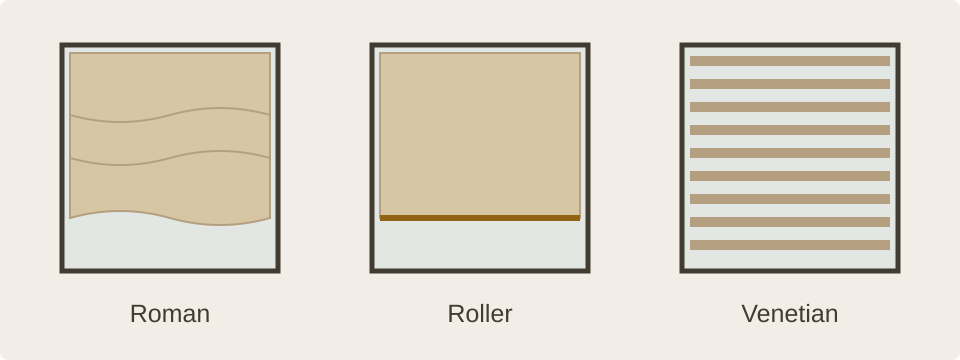

Mill Hill, North London
Made-to-measure blinds in Mill Hill
Choose a blind around the window, the way you use the room and the light you want to keep.

Start with the room and the window
Consider how much light you want, whether privacy matters during the day or after dark, and how the window opens. A bedroom may need stronger light reduction; a living space may benefit from filtered daylight; a street-facing room may need privacy while retaining natural light.
Window shape, handles, doors and nearby furniture also affect which style and fixing will work. Photographs and approximate dimensions are useful for an initial conversation.
Compare blind styles

Soft fabric and a relaxed finish
Roman blinds gather into fabric folds as they are raised. Roller blinds wind into a compact roll and give a simpler profile. Both are available in fabrics with different colours, textures and levels of transparency; lining can also be discussed.
Adjustable light and wider windows
Venetian blinds use horizontal slats that tilt to change the light and view. Vertical blinds use upright vanes that can be turned and drawn aside, making them one option to discuss for wider glazed areas. Pleated blinds give a crisp folded profile and can suit windows where a compact finish is useful.
Light reduction and privacy
Blackout fabrics can reduce light through the material and may suit bedrooms or rooms used for viewing screens. Light can still enter around the edges, so a blind alone cannot promise complete darkness. Sheer or translucent fabrics create a softer daytime effect, while privacy after dark depends on the fabric and the room’s lighting.
From the first idea to the fitting
Share your brief
Tell us about the room, window, preferred look and light or privacy needs.
Measure the details
Confirm the final dimensions, fixing positions, clearances and operating side.
Plan the finish
Agree the specification and fitting arrangements. Mention unusual shapes or opening windows early.
Common questions
Can you help me choose between Roman and roller blinds?
Yes. Roman blinds use fabric that gathers into folds; roller blinds wind around a tube. The suitable choice depends on the look you want, the window, available clearance and how you use the room.
Will a blackout blind make my room completely dark?
Blackout fabric reduces light through the fabric itself. Light may still enter around the sides, top or bottom, depending on the window and fitting, so complete darkness cannot be assumed.
Do you measure and fit blinds?
Measuring and fitting can be discussed as part of your project. Final dimensions and fixing details are checked for each window before the blind is ordered.
Can I see fabric samples?
Contact or visit the Mill Hill showroom to discuss available samples and product choices. Availability is confirmed when you enquire.
Talk through your windows with us
Call 020 8906 9900, email info@mkiuk.com or arrange a showroom visit.
Prepare your enquiry ↗